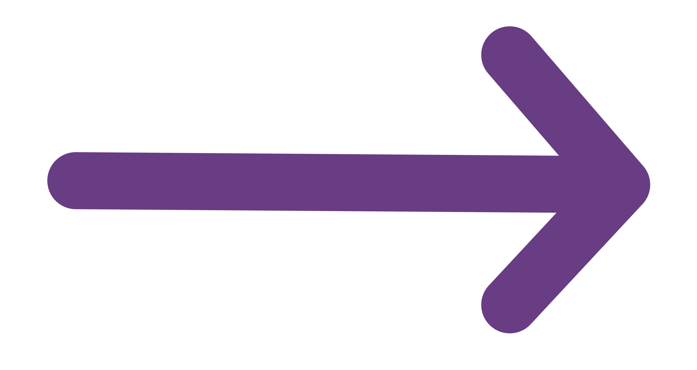
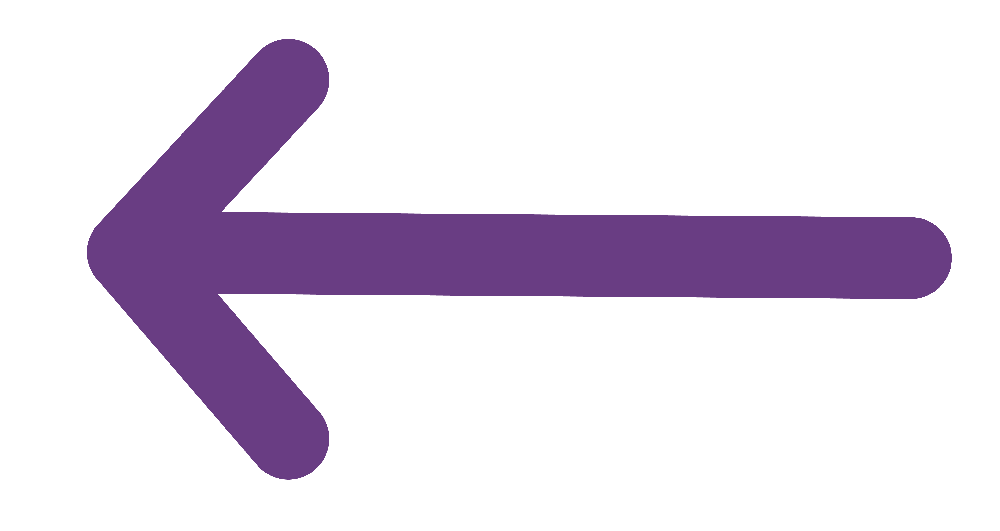

<!-- Codi botons -->
<a href="#" class="btn btn-primary btn-dark">Inicia la ruta! </a>
<a href="#" class="btn btn-primary btn-light">Inicia la ruta! </a>

<a href="#" class="btn btn-secondary btn-dark">Llocs destacats </a>
<a href="#" class="btn btn-secondary btn-light">Llocs destacats </a>

<a href="#" class="btn btn-next btn-dark-border">Següent </a>
<a href="#" class="btn btn-next btn-light-border">Següent </a>

<a href="#" class="btn btn-next btn-light">Següent </a>

<a href="#" class="btn btn-ant btn-dark-border"> Anterior </a>
<a href="#" class="btn btn-ant btn-light-border">  Anterior </a>

<button class="btn btn-primary btn-dark"> Inicia la ruta!</button>
<button class="btn btn-primary btn-light"> Inicia la ruta!</button>

<button class="btn btn-secondary btn-light">Llocs destacats</button>
<button class="btn btn-secondary btn-dark">Llocs destacats</button>

<button class="btn btn-next btn-dark-border">Següent</button>
<button class="btn btn-next btn-light-border">Següent</button>

<button class="btn btn-ant btn-dark-border">Anterior </button>
<button class="btn btn-ant btn-light-border">Anterior </button>

<button class="btn btn-share btn-light"></button>
<button class="btn btn-share btn-dark"></button>
